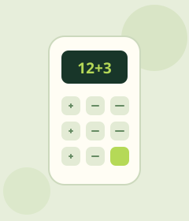
Neon Calculator
BeginnerResponsive calculator featuring a dual-line LCD display, expression evaluation, and neon glowing effects.
Learn · Build · Contribute
Build projects, strengthen your JavaScript fundamentals, and contribute to open source.
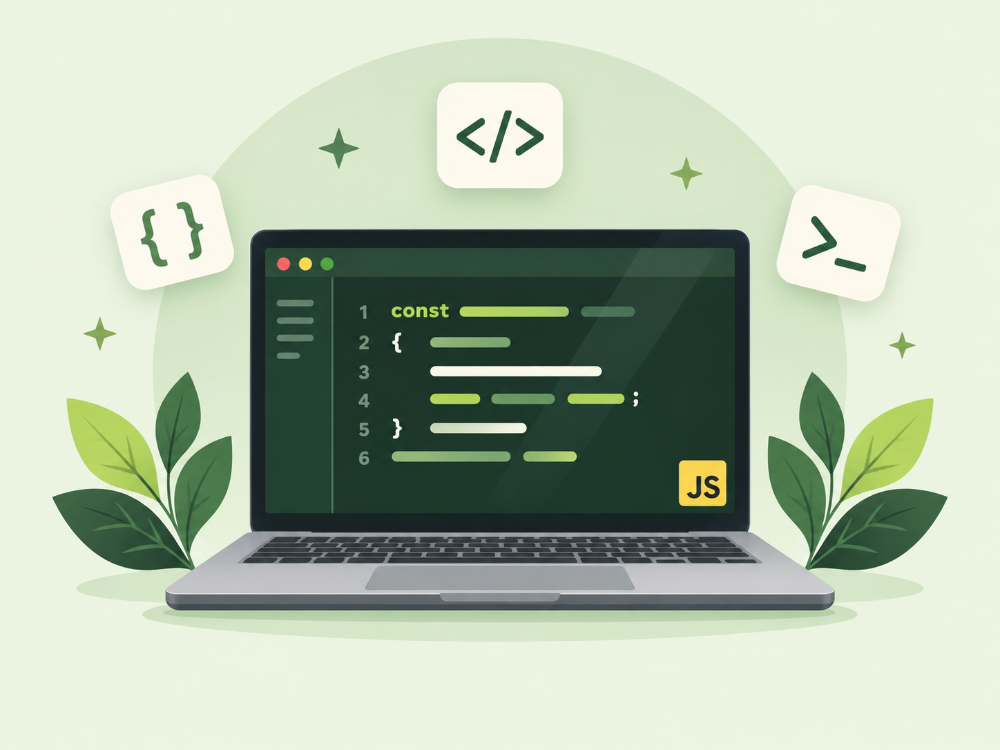
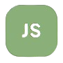
A collection of beginner-friendly and advanced JavaScript projects.
Open to contributions

Responsive calculator featuring a dual-line LCD display, expression evaluation, and neon glowing effects.
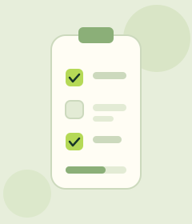
Feature-packed to-do app with persistent storage, filter views (All, Active, Completed), and theme switching.
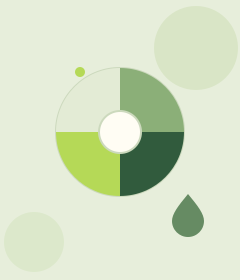
Switch between preset color themes or generate random hex codes with a single click.
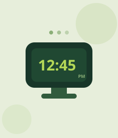
Clean digital clock displaying the current time with live updates every second.
Guessing game with random number generation, attempt tracking, and high/low feedback hints.
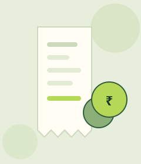
Track income and expenses with balance calculations, transaction history, and localStorage persistence.
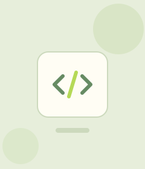
Simple to-do list with task creation, completion toggling, and deletion using direct DOM manipulation.
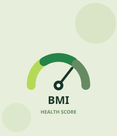
Calculate Body Mass Index with unit conversion, category gauge, and auto-reset after inactivity.
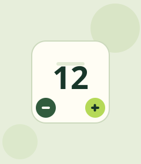
Interactive number counter supporting increment, decrement, and reset with dynamic value-based colors.
Interactive authentication UI featuring tab switching and real-time form validation with regex patterns.
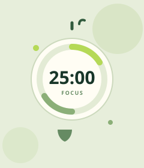
A 25/5 Pomodoro timer with start, pause, reset, and auto-switching between work and break sessions.
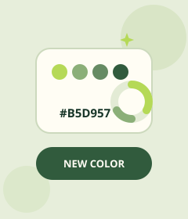
Generate random RGB or hex background colors with live interactive controls and code displays.
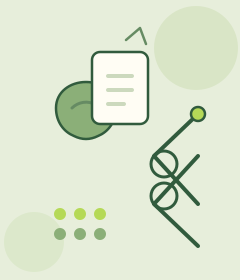
Classic Rock Paper Scissors game played against a computer with score tracking and round results.
Calculate the tip and split the bill per person with preset or custom tip percentages.
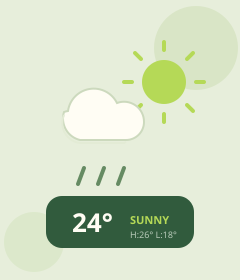
Real-time weather dashboard with OpenWeatherMap API, dynamic weather backgrounds, and hourly forecasts.
API key required
No projects match your current search and filters. Try a different keyword or clear the filters to see every project.